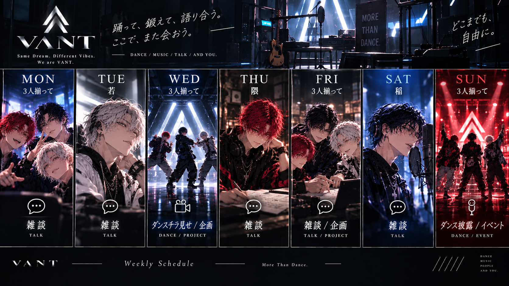

TOP / SCHEDULE
SCHEDULE
配信・ライブ・イベントの予定。
このページはダミーです。日程・時間・タイトルはすべてサンプル表示で、申込はできません。
WEEKLY ROUTINE
毎週の配信リズム。特別な告知がない週も、この曜日にいます。

UPCOMING DATES
ALLONLINE LIVEFAN MEETINGFREE LIVESTAGE LIVESTREET SHOW
ONLINE LIVEVΛNT // NIGHT SESSION #1820:00 JST
FREE LIVE3人で近況トーク22:00 JST
FAN MEETINGΛLLY PLAYGROUND19:00 JST
ONLINE LIVEVΛNT // NIGHT SESSION #1920:00 JST
STREET SHOW屋外ショーケース（会場調整中）15:00 JST
STAGE LIVEVΛNT // MORE THAN DANCE — STAGE 01PICK UP18:00 JSTFREE LIVEトレーニング配信21:00 JST